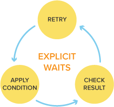
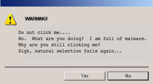
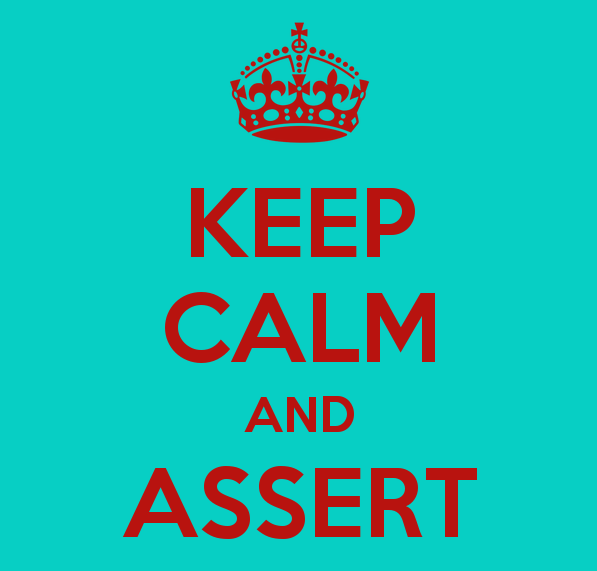

Test flow control
TABLE OF CONTENTS
- Explicit waits
- Implicit waits
- Custom-expected conditions
- Popup and alert windows
- Frames
- Verifications and Asseritons
Explicit waits

- Selenium Waits
- Waiting is having the automated task execution elapse a certain amount of time before continuing with the next step.
- WARNING: Do not mix implicit and explicit waits. Doing so can cause unpredictable wait times. For example setting an implicit wait of 10s and an explicit wait of 15 seconds, could cause a timeout to occur after 20 seconds
Explicit waits
- An explicit waits is code you define to wait for a certain condition to occur before proceeding further in the code.
- The worst case of this is Thread.sleep(), which sets the condition to an exact time period to wait. There are some convenience methods provided that help you write code that will wait only as long as required. WebDriverWait in combination with ExpectedCondition is one way this can be accomplished.
Explicit waits (2)
The code below waits up to 10 seconds before throwing a TimeoutException or if it finds the element will return it in 0 - 10 seconds. WebDriverWait by default calls the ExpectedCondition every 500 milliseconds until it returns successfully. A successful return is for ExpectedCondition type is Boolean return true or not null return value for all other ExpectedCondition types.
Waits for 10 seconds
WebDriver driver = new FirefoxDriver();
driver.get("http://somedomain/url_that_delays_loading");
WebElement myDynamicElement = (new WebDriverWait(driver, 10))
.until(ExpectedConditions.presenceOfElementLocated(By.id("myDynamicElement")));
Implicit waits
An implicit wait is to tell WebDriver to poll the DOM for a certain amount of time when trying to find an element or elements if they are not immediately available. The default setting is 0. Once set, the implicit wait is set for the life of the WebDriver object instance.
Waits for 10 seconds
WebDriver driver = new FirefoxDriver();
driver.manage().timeouts().implicitlyWait(10, TimeUnit.SECONDS);
driver.get("http://somedomain/url_that_delays_loading");
WebElement myDynamicElement = driver.findElement(By.id("myDynamicElement"));
Custom-expected conditions
- Expected conditions
- There are some common conditions that are frequently come across when automating web browsers. Java happens to have convenience methods so you don’t have to code an ExpectedCondition class yourself or create your own utility package for them.
- e.g. Element is Clickable => it is Displayed and Enabled
- The ExpectedConditions package for Java contains a set of predefined conditions to use with WebDriverWait.
Waits for 10 seconds
WebDriverWait wait = new WebDriverWait(driver, 10);
WebElement element =
wait.until(ExpectedConditions.elementToBeClickable(By.id("someid")));
Expected conditions (2)
- alertIsPresent() : Is Alert Present?
- elementSelectionStateToBe: Is the element selected?
- elementToBeClickable: Is the element clickable?
- elementToBeSelected: Element is selected
- frameToBeAvailableAndSwitchToIt: Is frame available and selected?
- invisibilityOfElementLocated: Is the element invisible?
Expected conditions (3)
- presenceOfAllElementsLocatedBy: All elements presence
- location.refreshed: Wait for a page refresh.
- textToBePresentInElement: Is the text present for a particular element?
- textToBePresentInElementValue: Is the element value present for a particular element?
- visibilityOf: Is the element visible?
- titleContains: Is that title contain?
Popup and alert windows
- Popup and alert windows
-
There are two types of alerts that we would be focusing on majorly:
- Windows based alert pop ups
- Web based alert pop ups
- Handling pop up is one of the most challenging piece of work to automate while testing web applications. Owing to the diversity in types of pop ups complexes the situation even more.
- Popup and alert windows (2)
- Web Based Popups
-
There are the four methods that we would be using along with the Alert interface.
- void dismiss() – The dismiss() method clicks on the “Cancel” button as soon as the pop up window appears.
- void accept() – The accept() method clicks on the “Ok” button as soon as the pop up window appears.
- String getText() – The getText() method returns the text displayed on the alert box.
- void sendKeys(String stringToSend) – The sendKeys() method enters the specified string pattern into the alert box.
- Popup and alert windows (3)
- Import org.openqa.selenium.Alert – references to the Alert class which is required to handle the web based alerts in WebDriver.
- Sometimes we need to handle pop ups generated by Windows like a print pop up or a browsing window while uploading a file.
- Handling these pop-ups have always been a little tricky as we know Selenium is an automation testing tool which supports only web application testing, that means, it doesn’t support Windows based applications and window alert is one of them. However Selenium alone can’t help the situation but along with some third party intervention, this problem can be overcome.
- Popup and alert windows (4)
- There are several third party tools available for handling window based pop-ups along with the selenium.
- We can handle a window based pop up using Robot class.
- Robot class is a java based utility which emulates the keyboard and mouse actions.
- Popup and alert windows (5)
- import java.awt.Robot – Import this package prior to the script creation The package references to the Robot class in java which is required simulate keyboard and mouse events.
- import java.awt.event.KeyEvent – – The package allows the user to use keyPress and keyRelease events of keyboard.
Robot class
// click on attach files icon
driver.findElement(By.xpath("//div[contains(@command,'Files')]//div[contains(@class,'aaA')]")).click();
// creating instance of Robot class (A java based utility)
Robot rb = new Robot();
// pressing keys with the help of keyPress and keyRelease events
rb.keyPress(KeyEvent.VK_ENTER);
rb.keyRelease(KeyEvent.VK_ENTER);
robot.delay(2000);
You can also try waiting for the alert to appear and then accepting it.
Accept alert
try{
//Wait 10 seconds till alert is present
WebDriverWait wait = new WebDriverWait(driver, 10);
Alert alert = wait.until(ExpectedConditions.alertIsPresent());
//Accepting alert.
alert.accept();
System.out.println("Accepted the alert successfully.");
}catch(Throwable e){
System.err.println("Error came while waiting for the alert popup. "+e.getMessage());
}
//Or use
driver.switchTo().alert().accept();
driver.switchTo().alert().dismiss();
driver.switchTo().alert().defaultConent();
Frames

Frames (2)
Moving Between Windows and Frames - some web applications have many frames or multiple windows. WebDriver supports moving between named windows using the “switchTo” method:
switchTo
driver.switchTo().window("windowName");
Frames (3)
All calls to driver will now be interpreted as being directed to the particular window. But how do you know the window’s name? Take a look at the javascript or link that opened it:
windowName
Click here to open a new window
Frames (4)
Alternatively, you can pass a “window handle” to the “switchTo().window()” method. Knowing this, it’s possible to iterate over every open window like so:
switchTo window
for (String handle : driver.getWindowHandles()) {
driver.switchTo().window(handle);
}
You can also switch from frame to frame (or into iframes):
switchTo window
driver.switchTo().frame("frameName");
Verifications and Asseritons
-
Verifications and Asseritons (2)
-
- Assert command in Selenium:
- When an "assert" command fails then test execution will be aborted.
- Assert is best used when the check value has to pass for the test to be able to continue to run. Like a log in.
-
- Verify command in Selenium:
- When a "verify" command fails then test will continue executing and logging the failure.
- Verify is best used to check non critical things. Like the presence of a headline element.
-
Verifications and Asseritons (3)
- TestNG assertion - Assert.assertEquals(actual, expected)
- This assertion is useful to compare expected and actual values in selenium webdriver. If both values match then its fine and will continue execution. But if fails then immediately it will mark that specific test method as fail and exit from that test method.
- You can use different types of values in actual and expected like boolean, byte[], char, double, float, int, etc.. but function is same for all. Let we look at simple example to understand it better.
assertEquals
Assert.assertEquals(Actualtext, "Tuesday, 28 January 2014");
 evgenikostadinov@gmail.com
evgenikostadinov@gmail.com